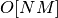
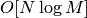
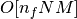
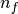
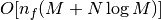
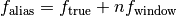
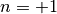
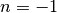
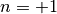
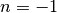

Lomb-Scargle Periodograms¶
The Lomb-Scargle Periodogram (after Lomb [1], and Scargle [2])
is a commonly-used statistical tool designed to detect periodic signals
in unevenly-spaced observations.
The LombScargle class is a unified interface to several
implementations of the Lomb-Scargle periodogram, including a fast O[NlogN]
implementation following the algorithm presented by Press & Rybicki [3].
The code here is adapted from the astroml package ([4], [5]) and the gatspy package ([6], [7]).
Basic Usage¶
Note
All frequencies in LombScargle are not angular
frequencies, but rather frequencies of oscillation; i.e. number of
cycles per unit time.
The Lomb-Scargle periodogram is designed to detect periodic signals in unevenly-spaced observations. For example, consider the following data:
>>> import numpy as np
>>> rand = np.random.RandomState(42)
>>> t = 100 * rand.rand(100)
>>> y = np.sin(2 * np.pi * t) + 0.1 * rand.randn(100)
These are 100 noisy measurements taken at irregular times, with a frequency
of 1 cycle per unit time.
The Lomb-Scargle periodogram, evaluated at frequencies chosen
automatically based on the input data, can be computed as follows
using the LombScargle class:
>>> from astropy.stats import LombScargle
>>> frequency, power = LombScargle(t, y).autopower()
Plotting the result with matplotlib gives:
>>> import matplotlib.pyplot as plt
>>> plt.plot(frequency, power)
(Source code, png, hires.png, pdf)
{kind=link}
{kind=link}
The periodogram shows a clear spike at a frequency of 1 cycle per unit time, as we would expect from the data we constructed.
Measurement Uncertainties¶
The LombScargle interface can also handle data with
measurement uncertainties.
For example, if all uncertainties are the same, you can pass a scalar:
>>> dy = 0.1
>>> frequency, power = LombScargle(t, y, dy).autopower()
If uncertainties vary from observation to observation, you can pass them as an array:
>>> dy = 0.1 * (1 + rand.rand(100))
>>> y = np.sin(2 * np.pi * t) + dy * rand.randn(100)
>>> frequency, power = LombScargle(t, y, dy).autopower()
Gaussian uncertainties are assumed, and dy here specifies the standard
deviation (not the variance).
Units and Normalization¶
The LombScargle interface properly handles
Quantity objects with units attached,
and will validate the inputs to make sure units are appropriate. For example:
>>> import astropy.units as u
>>> t_days = t * u.day
>>> y_mags = y * u.mag
>>> dy_mags = y * u.mag
>>> frequency, power = LombScargle(t_days, y_mags, dy_mags).autopower()
>>> frequency.unit
Unit("1 / d")
>>> power.unit
Unit(dimensionless)
We see that the output is dimensionless, which is always the case for the
normalized periodogram (normalization='normalized', which is the default).
Regardless of the input units in this case, the Lomb-Scargle power P is a
dimensionless quantity satisfying 0 ≤ P ≤ 1.
Alternatively, you can choose normalization='psd', which will output the
periodogram with units y.unit ** 2, similar to the Fourier power spectral
density (PSD):
>>> ls = LombScargle(t_days, y_mags)
>>> frequency, power = ls.autopower(normalization='psd')
>>> power.unit
Unit("mag2")
Note, however, that the psd result only has these units if uncertainties
are not specified. In the presence of uncertainties, even the unnormalized
periodogram is dimensionless; this is due to the scaling of data by uncertainty
within the Lomb-Scargle computation:
>>> # with uncertainties, PSD power is unitless
>>> ls = LombScargle(t_days, y_mags, dy_mags)
>>> frequency, power = ls.autopower(normalization='psd')
>>> power.unit
Unit(dimensionless)
The equivalence of the periodogram and the Fourier PSD in the unnormalized, no-uncertainty case can be confirmed by comparing results directly for uniformly-sampled inputs. We will first define a convenience function to compute the basic Fourier periodogram for uniformly-sampled data:
>>> def fourier_periodogram(t, y):
... N = len(t)
... frequency = np.fft.fftfreq(N, t[1] - t[0])
... y_fft = np.fft.fft(y.value) * y.unit
... positive = (frequency > 0)
... return frequency[positive], (1. / N) * abs(y_fft[positive]) ** 2
Next we compute the two versions of the PSD from uniformly-sampled data:
>>> from scipy.signal import periodogram
>>> t_days = np.arange(100) * u.day
>>> y_mags = rand.randn(100) * u.mag
>>> frequency, PSD_fourier = fourier_periodogram(t_days, y_mags)
>>> PSD_LS = LombScargle(t_days, y_mags).power(frequency, normalization='psd')
Examining the results, we see that the results match:
>>> from astropy.tests.helper import quantity_allclose
>>> quantity_allclose(PSD_fourier, PSD_LS)
True
This equivalence is one reason the Lomb-Scargle periodogram is considered to be an extension of the Fourier PSD.
Specifying the Frequency¶
With the autopower() method used above,
a heuristic is applied to select
a suitable frequency grid. By default, the heuristic assumes that the width of
peaks is inversely proportional to the observation baseline, and that the
maximum frequency is a factor of 5 larger than the so-called “average Nyquist
frequency”, computed based on the average observation spacing.
This heuristic is not universally useful, as the frequencies probed by
irregularly-sampled data can be much higher than the average Nyquist frequency.
For this reason, the heuristic can be tuned through keywords passed to the
autopower() method. For example:
>>> frequency, power = LombScargle(t, y, dy).autopower(nyquist_factor=2)
>>> len(frequency), frequency.min(), frequency.max()
(500, 0.0010189890448009111, 1.0179700557561102)
Here the highest frequency is two times the average Nyquist frequency.
If we increase the nyquist_factor, we can probe higher frequencies:
>>> frequency, power = LombScargle(t, y, dy).autopower(nyquist_factor=10)
>>> len(frequency), frequency.min(), frequency.max()
(2500, 0.0010189890448009111, 5.0939262349597545)
Alternatively, we can use the power()
method to evaluate the periodogram at a user-specified set of frequencies:
>>> frequency = np.linspace(0.5, 1.5, 1000)
>>> power = LombScargle(t, y, dy).power(frequency)
Note that the fastest Lomb-Scargle implementation requires regularly-spaced frequencies; if frequencies are irregularly-spaced, a slower method will be used instead.
Frequency Grid Spacing¶
One common issue with user-specified frequencies is inadvertently choosing too coarse a grid, such that significant peaks lie between grid points and are missed entirely.
For example, imagine you chose to evaluate your periodogram at 100 points:
>>> frequency = np.linspace(0.1, 1.9, 100)
>>> power = LombScargle(t, y, dy).power(frequency)
>>> plt.plot(frequency, power)
(Source code, png, hires.png, pdf)
{kind=link}
{kind=link}
From this plot alone, one might conclude that no clear periodic signal exists in the data. But this conclusion is in error: there is in fact a strong periodic signal, but the periodogram peak falls in the gap between the chosen grid points!
A safer approach is to use the frequency heuristic to decide on the appropriate
grid spacing to use, optionally passing a minimum and maximum frequency to
the autopower() method:
>>> frequency, power = LombScargle(t, y, dy).autopower(minimum_frequency=0.1,
... maximum_frequency=1.9)
>>> len(frequency)
884
>>> plt.plot(frequency, power)
(Source code, png, hires.png, pdf)
{kind=link}
{kind=link}
With a finer grid (here 884 points between 0.1 and 1.9), it is clear that there is a very strong periodic signal in the data.
By default, the heuristic aims to have roughly five grid points across each
significant periodogram peak; this can be increased by changing the
samples_per_peak argument:
>>> frequency, power = LombScargle(t, y, dy).autopower(minimum_frequency=0.1,
... maximum_frequency=1.9,
... samples_per_peak=10)
>>> len(frequency)
1767
Keep in mind that the width of the peak scales inversely with the baseline of the observations (i.e. the difference between the maximum and minimum time), and the required number of grid points will scale linearly with the size of the baseline.
The Lomb-Scargle Model¶
Under the hood, the Lomb-Scargle periodogram essentially fits a sinusoidal model to the data at each frequency, with a larger power reflecting a better fit. With this in mind, it is often helpful to plot the best-fit sinusoid over the phased data.
This best-fit sinusoid can be computed using the model() method of the LombScargle object:
>>> best_frequency = frequency[np.argmax(power)]
>>> t_fit = np.linspace(0, 1)
>>> y_fit = LombScargle(t, y, dy).model(t_fit, best_frequency)
We can then phase the data and plot the Lomb-Scargle model fit:
(Source code, png, hires.png, pdf)
{kind=link}
{kind=link}
Periodogram Algorithms¶
The LombScargle class makes available
several complementary implementations of the Lomb-Scargle Periodogram,
which can be selected using the method keyword of the Lomb-Scargle power.
By design all methods will return the same results (some approximate),
and each has its advandages and disadganvages.
For example, to compute a periodogram using the fast chi-square method
of Palmer (2009) [8], you can specify method='fastchi2':
>>> frequency, power = LombScargle(t, y).autopower(method='fastchi2')
There are currently six methods available in the package:
method='auto'¶
The auto method is the default, and will attempt to select the best option
from the following methods using heuristics driven by the input data.
method='slow'¶
The slow method is a pure-Python implementation of the original Lomb-Scargle
periodogram ([1], [2]), enhanced to account for observational noise,
and to allow a floating mean (sometimes called the generalized periodogram;
see e.g. [9]). The method is not particularly fast, scaling approximately
as  for  data points and
data points and  frequencies.
frequencies.
method='cython'¶
The cython method is a cython implementation of the same algorithm used for
method='slow'. It is slightly faster than the pure-python implementation,
but much more memory-efficient as the size of the inputs grow. The computational
scaling is approximately for data points and
frequencies.
method='scipy'¶
The scipy method wraps the C implementation of the original Lomb-Scargle
periodogram which is available in scipy.signal.lombscargle(). This is
slightly faster than the slow method, but does not allow for errors in
data or extensions such as the floating mean. The scaling is approximately
for data points and frequencies.
method='fast'¶
The fast method is a pure-Python implementation of the fast periodogram of
Press & Rybicki [3]. It uses an extirpolation approach to approximate
the periodogram frequencies using a fast Fourier transform. As with the
slow method, it can handle data errors and floating mean.
The scaling is approximately  for
data points and frequencies.
method='chi2'¶
The chi2 method is a pure-Python implementation based on matrix algebra
(see, e.g. [7]). It utilizes the fact that the Lomb-Scargle periodogram at
each frequency is equivalent to the least-squares fit of a sinusoid to the
data. The advantage of the chi2 method is that it allows extensions of
the periodogram to multiple Fourier terms, specified by the nterms
parameter. For the standard problem, it is slightly slower than
method='slow' and scales as  for data points,
frequencies, and  Fourier terms.
method='fastchi2'¶
The fast chi-squared method of Palmer (2009) [8] is equivalent to the chi2 method,
but the matrices are constructed using the FFT-based approach of the fast
method. The result is a relatively efficient periodogram (though not nearly
as efficient as the fast method) which can be extended to multiple terms.
The scaling is approximately  for
data points, frequencies, and Fourier terms.
Summary¶
The following table summarizes the features of the above algorithms:
| method | Computational Scaling | Observational Uncertainties | Bias Term (Floating Mean) | Multiple Terms |
|---|---|---|---|---|
"slow" |
Yes | Yes | No | |
"cython" |
Yes | Yes | No | |
"scipy" |
No | No | No | |
"fast" |
Yes | Yes | No | |
"chi2" |
Yes | Yes | Yes | |
"fastchi2" |
Yes | Yes | Yes |
In the Computational Scaling column, is the number of data points,
is the number of frequencies, and is the number of
Fourier terms for a multi-term fit.
Example¶
An example of computing the periodogram for a more realistic dataset is shown in the following figure. The data shown here consist of 50 nightly observations of a simulated RR Lyrae-like variable star, with lightcurve shape that is more complicated than a simple sine wave:
(Source code, png, hires.png, pdf)
{kind=link}
{kind=link}
This example demonstrates that for irregularly-sampled data, the Lomb-Scargle periodogram can be sensitive to frequencies higher than the average Nyquist frequency: the above data are sampled at an average rate of roughly one observation per night, and the periodogram relatively cleanly reveals the true period of 0.41 days.
Still, the periodogram has many spurious peaks, which are due to several factors:
- Errors in observations lead to leakage of power from the true peaks.
- The signal is not a perfect sinusoid, so additional peaks can indicate higher-frequency components in the signal.
- The observations take place only at night, meaning that the survey window
has non-negligible power at a frequency of 1 cycle per day.
Thus we expect aliases to
appear at  for integer
values of
 . With a true period of 0.41 days and a 1-day signal
in the observing window, the  and 
aliases to lie at periods of 0.29 and 0.69 days, respectively:
these aliases are prominent in the above plot.
. With a true period of 0.41 days and a 1-day signal
in the observing window, the  and 
aliases to lie at periods of 0.29 and 0.69 days, respectively:
these aliases are prominent in the above plot.
The interaction of these effects means that in practice there is no absolute guarantee that the highest peak corresponds to the best frequency, and results must be interpreted carefully.
Literature References¶
| [1] | (1, 2) Lomb, N.R. Least-squares frequency analysis of unequally spaced data. Ap&SS 39 pp. 447-462 (1976) |
| [2] | (1, 2) Scargle, J. D. Studies in astronomical time series analysis. II - Statistical aspects of spectral analysis of unevenly spaced data. ApJ 1:263 pp. 835-853 (1982) |
| [3] | (1, 2) Press W.H. and Rybicki, G.B, Fast algorithm for spectral analysis of unevenly sampled data. ApJ 1:338, p. 277 (1989) |
| [4] | Vanderplas, J., Connolly, A. Ivezic, Z. & Gray, A. Introduction to astroML: Machine learning for astrophysics. Proceedings of the Conference on Intelligent Data Understanding (2012) |
| [5] | Vanderplas, J., Connolly, A. Ivezic, Z. & Gray, A. Statistics, Data Mining and Machine Learning in Astronomy. Princeton Press (2014)} |
| [6] | VanderPlas, J. Gatspy: General Tools for Astronomical Time Series in Python (2015) http://dx.doi.org/10.5281/zenodo.14833 |
| [7] | (1, 2) VanderPlas, J. & Ivezic, Z. Periodograms for Multiband Astronomical Time Series. ApJ 812.1:18 (2015) |
| [8] | (1, 2) Palmer, D. A Fast Chi-squared Technique for Period Search of Irregularly Sampled Data. ApJ 695.1:496 (2009) |
| [9] | Zechmeister, M. and Kurster, M. The generalised Lomb-Scargle periodogram. A new formalism for the floating-mean and Keplerian periodograms, A&A 496, 577-584 (2009) |